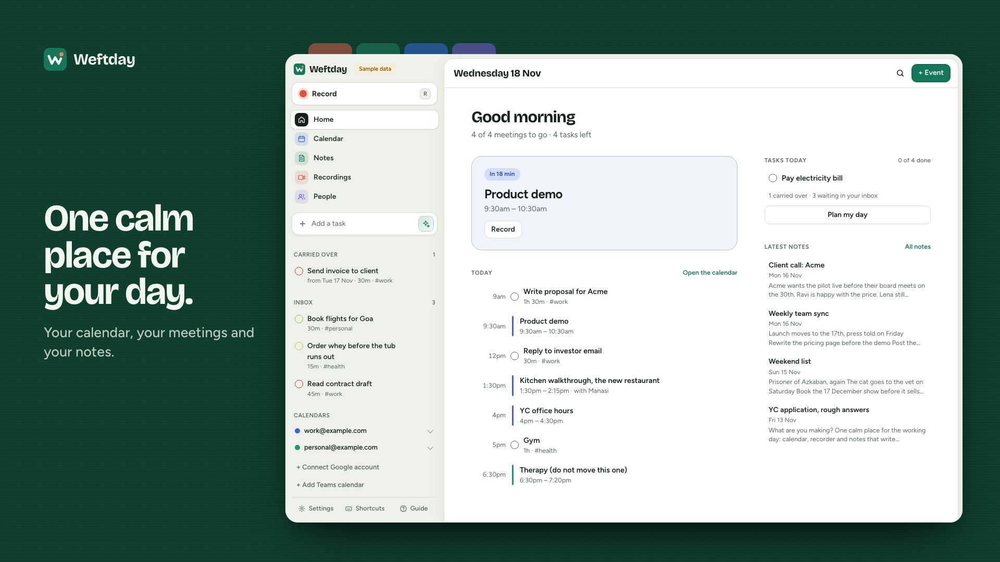
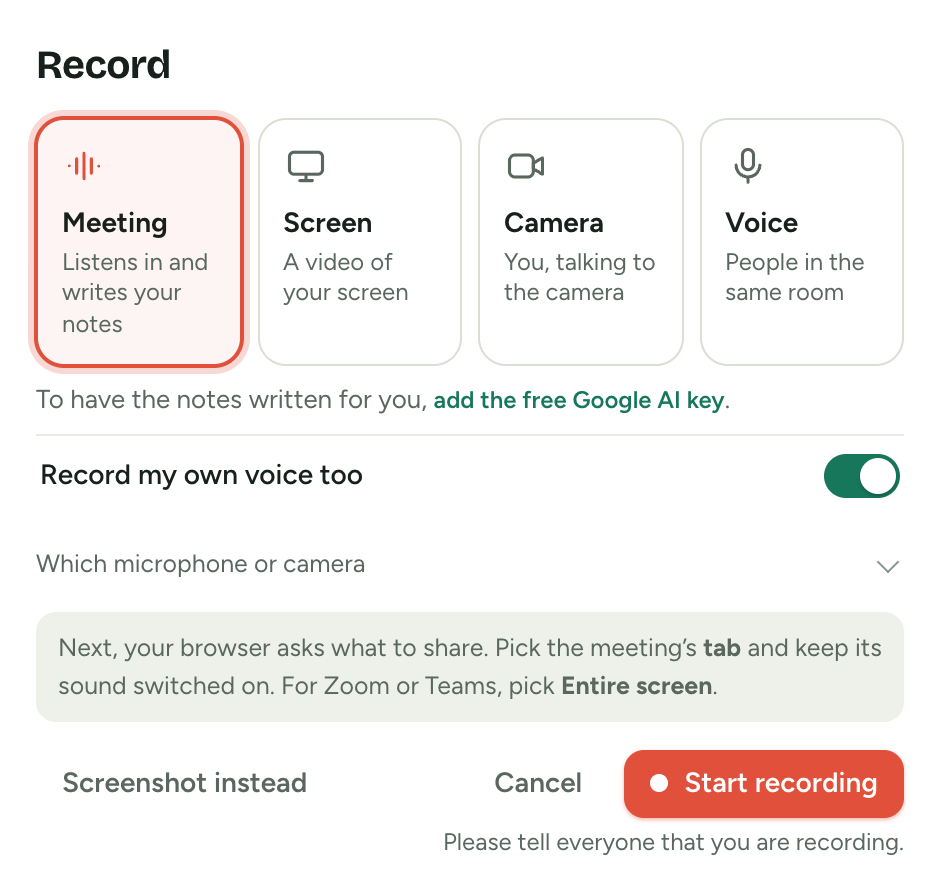
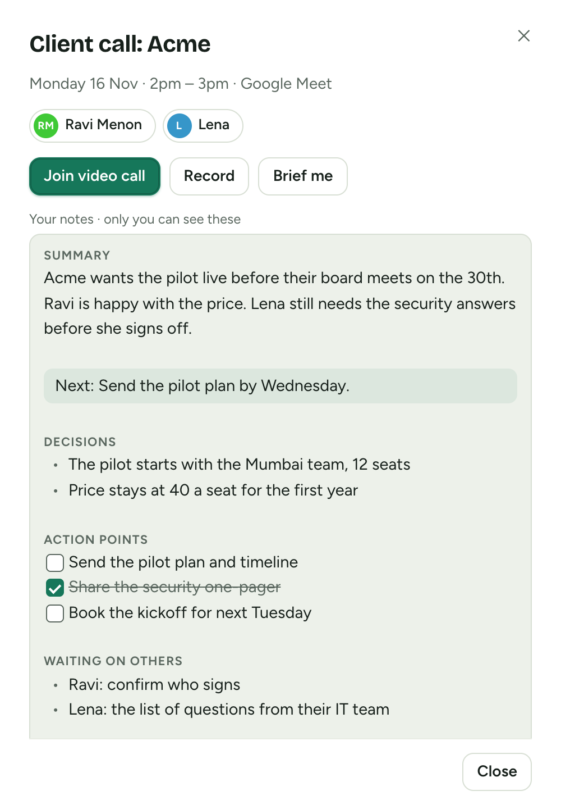
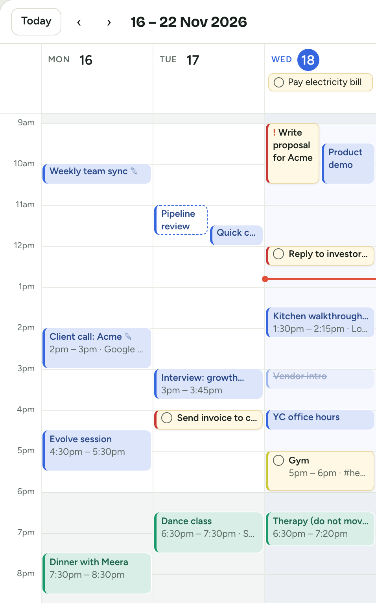
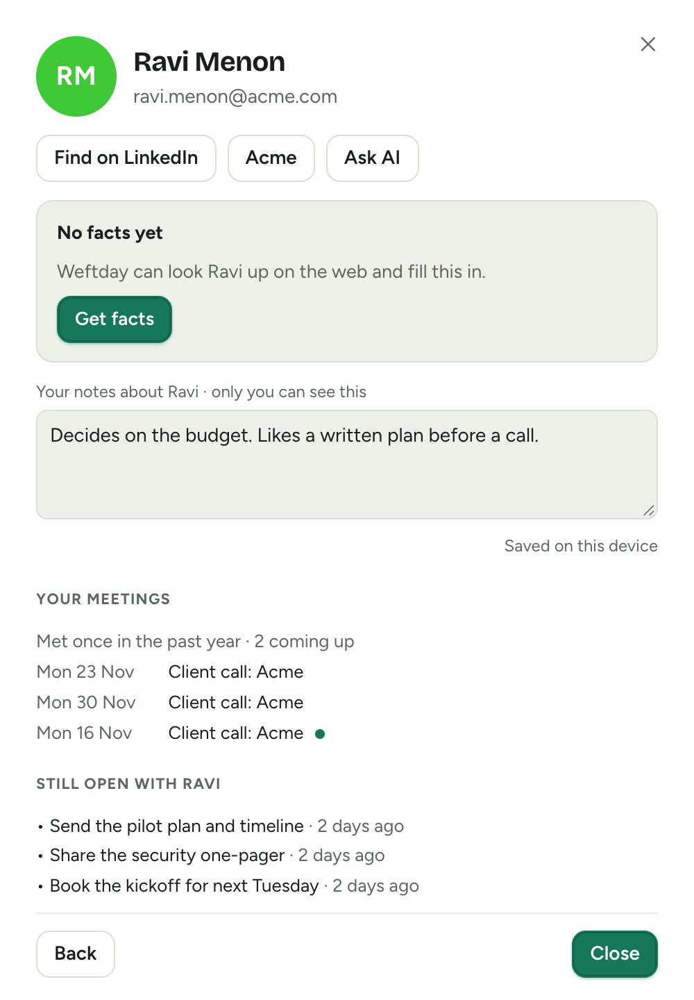

Your day,
woven together.
Weftday is one calm place for your calendar, your meetings and your notes. Press Record, and the notes write themselves.
Free and open source. Nothing to install, no account with us, no bot in your calls. Connecting your own calendar is invite-only for now: ask for an invite inside the app.

Press Record.
Walk out with the notes.
Weftday listens to the meeting through your own browser. No bot joins the call and nobody has to be invited. When it ends, the summary, the decisions and who does what are already written.
- Four ways to record: a meeting, your screen, your camera, or only your voice.
- Trim it, speed it up, or send a link from your own Google Drive.
- Recordings stay on your computer until you choose to share one.

Notes that know the meeting.
Because Weftday holds your calendar, the notes know who was in the room, what was agreed last time, and what you typed while it was happening.
- Your action points become tasks. What others owe you is kept apart.
- Ask across every meeting: “What did we agree with Acme about price?”
- Type the way you would in any notes app: a dash for a bullet, two brackets for a tick-box.

Every calendar.
One day.
Work, personal, a client’s. Connect each Google account once and they sit side by side, each in its own colour. A company Teams or Outlook calendar can join them.
- Add a task the way you say it: “gym tomorrow 7am”.
- Plan my day fits your tasks into the gaps between meetings.
- A second time zone down the side, for calls across countries.

Walk in knowing who you are meeting.
Everyone from your meetings gets a page: what you discussed, what is still open, and what you have written about them. A brief before the call takes one press.
- People are grouped by company, so an account is one glance.
- Free times writes out when you are free, in their time zone, ready to paste.

There is no Weftday server.
The app is a page that runs in your browser. Your calendar comes straight from Google to you. Recordings stay on your device. The AI runs on a key that you get, free, from Google. We never see any of it, and we could not if we tried.
- No account with us, no tracking, no ads.
- Nothing goes to an AI until you add your own key, and every automatic step has a switch.
- Works offline once it has been opened.
Open, all the way down.
Every line is on GitHub under the AGPL licence. Read it, run your own copy, or change it. There is no build step and nothing to install: Weftday is one folder of plain files.
git clone https://github.com/crckdteam/weftday.git cd weftdaynode serve.mjsThen open localhost:4321. That is the whole installation.
What it does not do yet
- Recording a call needs Chrome or Edge on a computer. A phone can record your voice or camera, not a call.
- Connecting Google takes a one-time setup of about ten minutes. A one-press sign-in is being arranged with Google.
- There is no Mac or Windows app yet. It lives in a browser tab.
Questions people ask first
Is Weftday really free?
Yes. There is no paid plan and no account with us. The AI features run on a key that you get free from Google. If you prefer a paid AI service you can use your own key for that instead, but nothing needs it.
Does a bot join my meetings?
No. Weftday listens through your own browser, the way a screen share does. Nothing joins the call and nobody else has to install anything. Please tell people you are recording.
Where are my recordings and notes kept?
In your browser, on your device. If you choose, tasks and notes are also kept in a calendar in your own Google account so your other devices have them. A share link copies one recording to your own Google Drive. There is no Weftday server.
Does it work with Google Meet, Zoom and Microsoft Teams?
Yes. For a meeting in a browser tab, share that tab with its sound. For the Zoom or Teams app, share the whole screen with system sound. A company Teams or Outlook calendar can be shown next to your Google calendars.
What do I need to get started?
Chrome or Edge on a computer for recording, and an invite. Weftday is letting in its first 100 people: press Request access in the app, message us, and your invite link opens it with nothing to set up. A one-press sign-in for everyone is being arranged with Google. You can try everything first with sample data.
How is Weftday different from Granola, Loom or Cap?
Those are polished products that each do one part: notes, or video. They run on their makers’ servers, and most are paid. Weftday puts the calendar, the recorder and the notes together, keeps everything on your device or in your own Google account, and is free and open source. The price is a little more setup.
Can I run my own copy?
Yes. Weftday is one folder of plain files with no build step. Put it on any static host, or run it on your computer with one command. The code is on GitHub under the AGPL-3.0 licence.
Start with today.
Open it, ask for your invite, and record your next meeting.
Free and open source. Nothing to install, no account with us, no bot in your calls. Connecting your own calendar is invite-only for now: ask for an invite inside the app.